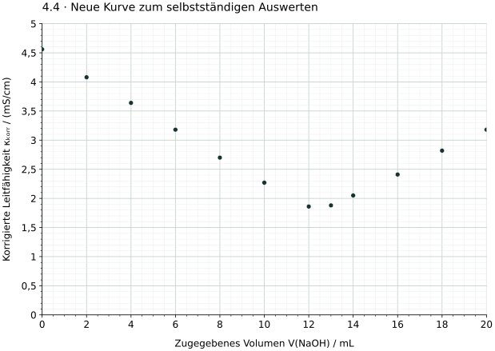

4.4 · Äquivalenzvolumen bestimmen
Wähle geeignete Geradenbereiche, zeichne zwei Ausgleichsgeraden und bestimme das Äquivalenzvolumen. Begründe einen grafischen Ablesebereich.
Didaktische Übungsdaten bei konstanter Temperatur. Leitfähigkeiten bereits volumenkorrigiert. Datenpunkte im Übergang bei der Geradenwahl gesondert beurteilen.

Begründung / Ergebnis: ___________________________________________________
______________________________________________________________________
______________________________________________________________________
Chemie · Jahrgang 13 · Eigenständig erstelltes Übungsmaterial